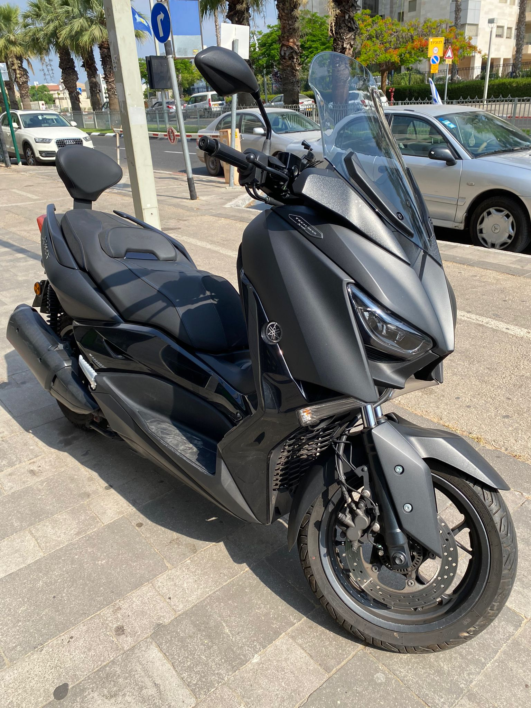
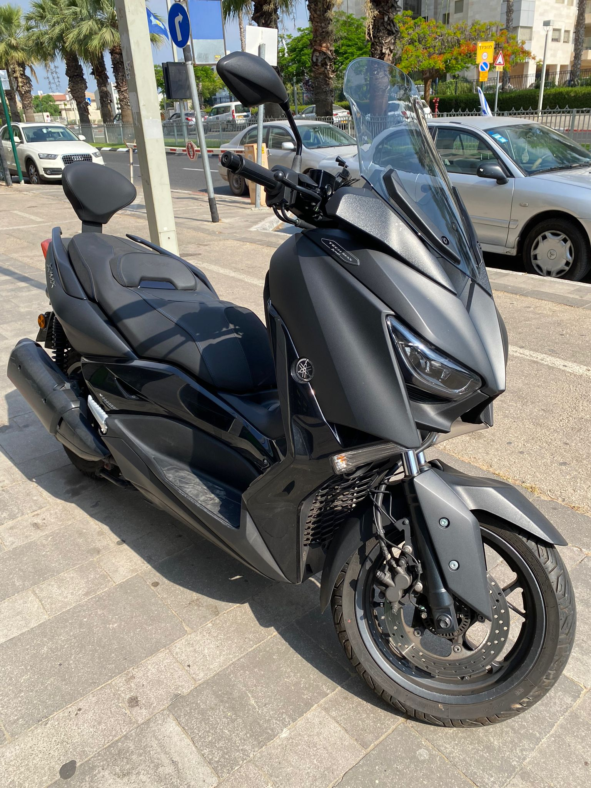

Afik Koriat
Welcome to my website!
This website is about me, my hobbies and personal information :)

- Full name: Afik Koriat
- Email: afiko1997@gmail.com
- Phone number: +972 526026965
A little bit about myself:
I am 25 years old, I was born in Petah Tikva, Israel.
I have an amazing parents, and four siblings (two brothers and two sisters) I am the youngest.
Since I can remember, I loved computers and technology and was always drawn in to it.
After high school I started my military service that lasted 3 years,
after my release I started working at Migdal Insurance Company in a back-office position.
As for now - I'm currently working at a delivery company and also a student of Quality Assurance & Automation.
My Hobbies:
My main hobby since I was 16 is motorcycles/scooters.
I really like to ride my scooter and upgrade it with different accesories that I usually order online!
Also I like to take pictures of my scooter from different angles and positions (I will add some of them here).
 

Another hobby of mine is to travel to different countries
So far I've traveled to 3 countries (and hopefully will travel to a lot more!):
Please click the countries for more information about them.


-5e5810d7aee4c.jpg)